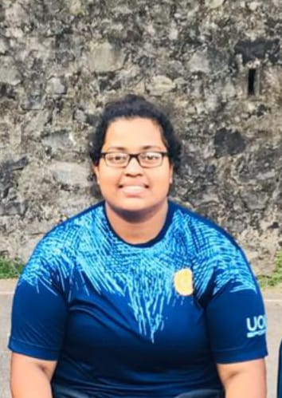
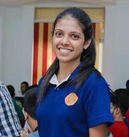

Basketball
Basketball
Basketball is a team sport in which two teams, most commonly of five players each, opposing one another on a rectangular court, compete with the primary objective of shooting a basketball (approximately 9.4 inches (24 cm)
in diameter) through the defender's hoop (a basket 18 inches (46 cm) in diameter mounted 10 feet (3.048 m) high to a backboard at each end of the court) while preventing the opposing team from shooting through their own hoop. A field goal is worth two points, unless made from behind the three-point line, when it is worth three. After a foul, timed play stops and the player fouled or designated to shoot a technical foul is given one or more one-point free throws. The team with the most points at the end of the game wins, but if regulation play expires with the score tied, an additional period of play (overtime) is mandated.
UOK Basketball
There are two Basketball teams (Men & Women) in the UOK. Basketball men and women teams selected to the quarter finalist in Inter University Championship – 2017. In 2017, University of Kelaniya has affiliated to the
Gampaha District Basketball Association at the district level sports.
|  |  | ||
| Gayan sampath Captain(men) 0716193924 |
Gayan sampath Vice-Captain(men) 0772734150 |
R.L. Chathuri Hashani Captain(women) 0771101461 |
Anuradha Dilki Aththanayake Vice-Captain(women) 0703216266 |
|
24 |
24 |
2 |
Contact Us :
University of Kelaniya,
Dalugama, Kelaniya,
Sri Lanka, 11600.
Tel: +94 (0) 112 903 201
Fax: +94 (0) 112 903 203
Email: deansc@kln.ac.lk
©2019 University of Kelaniya. All Rights Reserved. Designed By the Faculty Web Team